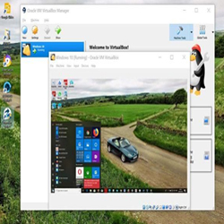
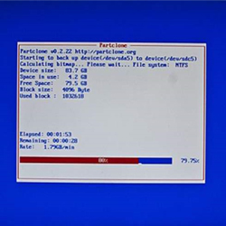
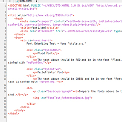
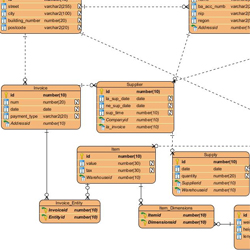

Technik Informatyk
Informatyka to prężnie rozwijająca się dziedzina, a także bardzo popularny w dzisiejszych czasach kierunek, dlatego aby osiągnąć sukces jako informatyk, niezbędne są duże zasoby wiedzy i doświadczenia.
Nasza szkoła zapewnia dobry start dla przyszłego informatyka, oferując przedmioty kształcące w różnych kierunkach. Po jej ukończeniu będziesz posiadał szeroki zakres możliwości zawodowych i solidną podstawę do dalszej nauki.
Na tym przedmiocie nauczysz się jak działają oraz jak są zbudowane różnego rodzaju urządzenia, którymi można zarządzać za pomocą komputera. Będą to m.in. drukarki, skanery oraz urządzenia we/wy. Poza nauką teoretyczną będziesz także obsługiwał niektóre z nich.

Na tym przedmiocie nauczysz się obsługi popularnych systemów operacyjnych (najnowszego Windowsa oraz Linuksa). Będziesz pracował na maszynie wirtualnej, korzystając głównie z wiersza poleceń. Wykonywane przez ciebie zadania będą m.in. z zakresu zarządzania dyskami, konfiguracji sieci i zabezpieczeń.
Jest to w dużej mierze praktyczny przedmiot, na którym nauczysz się przykładowo zaciskania wtyczek na kablu sieciowym za pomocą odpowiednich narzędzi. Będziesz się także uczył o światłowodach, przewodach sieciowych, topologiach sieci, adresacji IP i wielu innych tematach związanych z sieciami komputerowymi.

Na tym przedmiocie nauczysz się, jak w odpowiedni sposób zarządzać komputerami w domenie. Będziesz pracował z systemami Windows Server i Windows 10, łącząc maszyny wirtualne i wykonując na nich różne operacje za pomocą wielu poznanych funkcji serwerowych.

Na tych zajęciach będziesz uczył się tworzenia stron internetowych w dwóch aspektach. Pierwszy to nauka programowania stron w języku HTML, robiąc style w języku CSS Drugi to nauka grafiki i projektowania stron w programie Photoshop.

Na tym przedmiocie nauczysz się podstawowego zarządzania bazami danych, czyli tworzenia tabel i łączenia ich za pomocą relacji w programie Microsoft Access, a także wyszukiwania i filtrowania danych. Podobne operacje będziesz wykonywał w języku SQL.